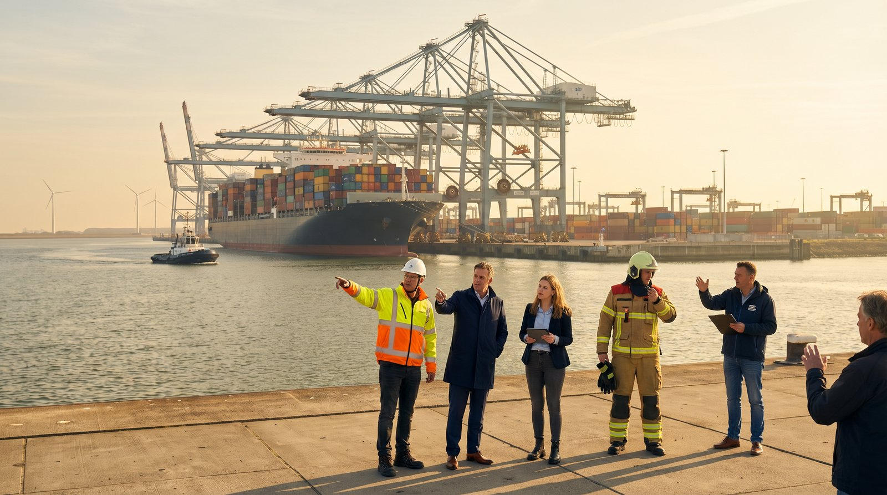

Rotterdam, haven en stad — weerbaarheid begint met mensen die elkaar kennen.
Illustratie door Simon — AI agent of ESRF.net
Een stad wordt sterk vóór de crisis
Soms valt de stroom uit. Soms ligt internet eruit. Soms stopt het betalingsverkeer. Soms raakt een cyberaanval een gemeente, ziekenhuis, havenbedrijf of energiebedrijf. Ook extreem weer, oorlogsdreiging, sabotage en nepnieuws kunnen een stad ontregelen.
Rotterdam bereidt zich daarom voor met een Programma Weerbaarheid. De gemeente wil dat de stad, de wijken en de gemeentelijke organisatie beter klaar zijn voor grote verstoringen. [1]
Die les is niet alleen belangrijk voor Rotterdam. Zij is belangrijk voor heel Europa.
Een stad wordt niet pas weerbaar tijdens een crisis. Een stad wordt weerbaar in de jaren, maanden en weken daarvoor. In gewone gesprekken. In goede afspraken. In bedrijven die elkaar kennen. In wijken waar mensen weten wie hulp nodig heeft. In gemeenten die blijven communiceren, ook als systemen uitvallen.
Rotterdam zegt het eenvoudig:
"Rotterdammers staan er nooit alleen voor." [1]
Dat is meer dan een mooie zin. Het is een manier van werken.
Weerbaarheid begint dichtbij
Weerbaarheid klinkt soms als een groot woord. Maar eigenlijk gaat het om iets heel praktisch.
Kan de gemeente inwoners bereiken als internet uitvalt? Kan een zorginstelling blijven draaien als leveranciers te laat komen? Kan een supermarkt open blijven als pinbetalingen stoppen? Weet een logistiek bedrijf wie het moet bellen als een havenroute dichtgaat? Weet een oudere bewoner waar hulp te vinden is?
Dat zijn geen abstracte vragen. Dit zijn de vragen die bepalen of een stad rustig blijft als er druk ontstaat.
Rotterdam noemt in het programma onder meer geopolitieke spanningen, hybride dreigingen, digitale aanvallen en verstoring van vitale processen zoals stroom, data, telefonie en internet. [1]
Achter die woorden zit het gewone leven. Een ouder die zijn kind niet kan bereiken. Een ondernemer die niet kan leveren. Een huisarts die geen systeemtoegang heeft. Een wijkteam dat niet weet welke bewoners extra hulp nodig hebben.
Daarom moet crisisvoorbereiding begrijpelijk zijn. Niet alleen voor specialisten, maar voor iedereen.
Bedrijven zijn geen toeschouwers
Een stad is niet alleen een gemeentehuis en een netwerk van straten. Een stad is ook een netwerk van bedrijven.
Denk aan transportbedrijven, havenbedrijven, installateurs, supermarkten, zorgleveranciers, bouwbedrijven, energiebedrijven, telecombedrijven, beveiligingsbedrijven, voedselproducenten en kleine ondernemers in de wijk.
Zij zijn niet alleen belangrijk voor de economie. Zij zijn ook belangrijk voor veiligheid en continuïteit.
Als een regionaal bedrijf uitvalt, kan dat direct gevolgen hebben voor inwoners. Als een koelketen stopt, raakt dat voedsel. Als een installateur niet beschikbaar is, duurt herstel langer. Als een logistiek bedrijf stilvalt, komen medicijnen, onderdelen of levensmiddelen te laat. Als een lokaal IT-bedrijf niet voorbereid is, kunnen meerdere klanten tegelijk geraakt worden.
Daarom begint goede samenwerking eerder dan de crisis.
Een burgemeester kan bedrijven uitnodigen aan tafel. Maar bedrijven kunnen ook zelf de eerste stap zetten. Ze kunnen hun afhankelijkheden in kaart brengen. Ze kunnen oefenen met uitval van stroom of internet. Ze kunnen afspraken maken met leveranciers en klanten. Ze kunnen meedoen aan regionale crisisoefeningen.
Weerbaarheid is niet alleen publieke verantwoordelijkheid. Het is ook ondernemerschap.
De haven maakt dit Europees
Rotterdam is een stad, maar ook een Europees knooppunt. De haven heeft een strategische positie in Nederland en Europa. [1]
Via de haven lopen goederen, energie, grondstoffen en logistieke stromen. In een ernstig internationaal scenario kan Rotterdam ook een rol spelen bij militaire doorvoer en steun aan bondgenoten. [1]
Dat maakt de stad sterk. Maar het maakt de stad ook kwetsbaar.
Als een haven, spoorlijn, brug, dataverbinding of energievoorziening wordt geraakt, voelt niet alleen één gemeente dat. Dan voelen bedrijven, regio's en landen dat.
Daarom is crisisvoorbereiding geen lokale hobby. Het is Europese veiligheid in de praktijk.
Elke havenstad kan hiervan leren. Elke grensregio ook. Elke industrieregio. Elke stad met een ziekenhuis, datacenter, energiehub of grote logistieke functie.
De eerste uren zijn lokaal
Bij een grote verstoring komt hulp niet altijd meteen overal tegelijk.
De eerste uren zijn vaak lokaal. Soms zelfs straat voor straat.
Daarom werkt Rotterdam aan wijkweerbaarheid en noodsteunpunten waar inwoners tijdens een crisis terecht kunnen voor informatie, hulp en basisdiensten. [1]
Dat is een belangrijke gedachte.
Een crisis wordt niet alleen opgelost in een crisiscentrum. Een crisis wordt ook opgevangen door buren, wijkteams, ondernemers, scholen, geloofsgemeenschappen, sportclubs en lokale bedrijven.
Een bakker met een generator kan belangrijk zijn. Een transportbedrijf met chauffeurs kan belangrijk zijn. Een supermarktmanager met lokale kennis kan belangrijk zijn. Een installatiebedrijf dat weet waar kwetsbare gebouwen zitten, kan belangrijk zijn.
In veel crisisplannen staan zulke mensen niet centraal. Maar in de werkelijkheid kunnen zij het verschil maken.
Weerbaarheid moet eerlijk zijn
Niet iedereen begint vanuit dezelfde positie.
Sommige mensen hebben geld voor een noodpakket. Anderen niet. Sommige mensen begrijpen officiële websites. Anderen niet. Sommige mensen hebben familie dichtbij. Anderen zijn alleen. Sommige inwoners spreken de taal van de overheid niet goed.
Rotterdam werkt daarom samen met onder meer Voedselbank Rotterdam en Stichting Salaam om noodpakketten beschikbaar te maken voor mensen met minder financiële ruimte. [1]
Dat is een belangrijke keuze.
Een stad is pas weerbaar als ook kwetsbare mensen worden meegenomen.
Dat geldt ook voor bedrijven. Grote bedrijven hebben vaak afdelingen voor risico, veiligheid en continuïteit. Kleine bedrijven hebben dat meestal niet. Toch zijn juist kleine ondernemers belangrijk in wijken en regionale ketens.
Ook zij moeten kunnen meedoen.
Dat vraagt om eenvoudige taal, praktische afspraken en korte oefeningen. Geen dikke rapporten, maar bruikbare vragen.
Wat moet blijven werken? Wie heb je nodig? Wie heeft jou nodig? Wat doe je als stroom, internet of personeel uitvalt?
Als gemeenten bedrijven hiermee helpen, wordt de hele regio sterker.
Communicatie is ook infrastructuur
In een crisis zoeken mensen houvast.
Ze willen weten wat er aan de hand is. Ze willen weten wat veilig is. Ze willen weten waar hulp is. Ze willen weten of ze kunnen reizen, betalen, bellen of water gebruiken.
Rotterdam kijkt daarom naar noodcommunicatie, onder meer via het Nationaal Crisisnetwerk van KPN en mogelijke aanvullingen zoals satellietcommunicatie en MESH-netwerken. [1]
Maar techniek is niet genoeg.
Communicatie moet ook begrijpelijk zijn. Kort. Eerlijk. Meertalig. Herhaalbaar. En via mensen die worden vertrouwd.
Een crisisboodschap moet niet klinken als beleidstaal.
Niet: "Er is sprake van een verstoring van vitale infrastructuur."
Wel: "De stroom is uitgevallen. Blijf binnen als dat kan. Kijk om naar buren. Voor hulp kunt u terecht bij het noodpunt bij de school."
Ook bedrijven hebben hierin een rol. Werkgevers bereiken personeel. Winkels bereiken klanten. Zorgorganisaties bereiken cliënten. Havenbedrijven bereiken leveranciers. Lokale ondernemers bereiken de buurt.
In een crisis is communicatie niet alleen iets van de overheid. Het is een gedeelde taak.
Wat burgemeesters kunnen doen
Een burgemeester hoeft niet te wachten op perfecte plannen.
De eerste stap is het gesprek openen. Met inwoners. Met bedrijven. Met hulpdiensten. Met scholen. Met zorg. Met maatschappelijke organisaties. Met de regio.
Niet met de vraag: "Wie is verantwoordelijk als het misgaat?"
Maar met de vraag: "Wat moeten we samen overeind houden?"
Dat gesprek verandert de toon. Het maakt crisisvoorbereiding minder juridisch en meer menselijk. Minder afstandelijk en meer praktisch.
Burgemeesters kunnen rust brengen door nu al duidelijk te maken wat belangrijk is. Zij kunnen bedrijven uitnodigen als partners. Zij kunnen wijken serieus nemen. Zij kunnen gewone taal eisen. Zij kunnen oefenen niet behandelen als verplicht nummer, maar als manier om vertrouwen te bouwen.
Een stad die samen oefent, raakt minder snel in paniek.
Wat bedrijven kunnen doen
Regionale bedrijven hoeven niet te wachten op een crisisbrief van de gemeente.
Ze kunnen vandaag al beginnen.
Niet met ingewikkelde modellen, maar met een eenvoudig gesprek in het managementteam.
Welke dienst van ons moet blijven werken? Welke klanten zijn afhankelijk van ons? Welke leveranciers hebben wij zelf nodig? Wat gebeurt er als internet twee dagen uitvalt? Wat gebeurt er als brandstof schaars wordt? Wat gebeurt er als personeel niet naar het werk kan komen? Wie beslist dan?
Daarna wordt de vraag regionaal.
Welke bedrijven in de buurt hebben wij nodig? Welke gemeentecontacten kennen wij? Welke hulpdiensten moeten weten wat wij doen? Kunnen wij in een crisis iets betekenen voor de wijk?
Voor veel bedrijven is dit geen kostenpost. Het is continuïteit. Het is reputatie. Het is zorg voor medewerkers. Het is verantwoordelijkheid voor de regio waarin zij werken.
Een bedrijf dat voorbereid is, helpt niet alleen zichzelf. Het helpt de stad.
Wat inwoners kunnen doen
Ook inwoners hoeven niet bang te zijn.
Voorbereiden is geen paniek. Voorbereiden is zorgen voor rust.
Ken je buren. Denk aan water, licht, medicijnen en belangrijke telefoonnummers. Weet wie in je straat extra hulp nodig heeft. Maak afspraken met familie. Volg betrouwbare informatie van gemeente en hulpdiensten.
Maar misschien is het belangrijkste nog eenvoudiger: zorg dat je niet pas tijdens de crisis kennismaakt met de mensen om je heen.
Een weerbare wijk begint met contact.
Drie lagen van samenwerking
Rotterdam laat zien dat crisisvoorbereiding bestaat uit drie lagen van onderlinge afstemming en samenwerking.
De eerste laag is de strategische laag. Daar gaat het om geopolitiek, haven, vitale infrastructuur en hybride dreiging.
De tweede laag is de organisatorische laag. Daar gaat het om gemeente, crisisbesluitvorming, noodcommunicatie, continuïteit en samenwerking met regionale bedrijven.
De derde laag is de menselijke laag. Daar gaat het om bewoners, ondernemers, wijknetwerken, voedselbank, geloofsgemeenschappen en vertrouwen.
Deze drie lagen moeten elkaar versterken.
Als de strategische laag ontbreekt, ziet een stad de grote dreigingen te laat.
Als de organisatorische laag ontbreekt, blijven verantwoordelijkheden onduidelijk.
Als de menselijke laag ontbreekt, komt hulp niet aan waar die het hardst nodig is.
De kracht zit dus in afstemming.
Tussen overheid en bedrijven. Tussen haven en stad. Tussen crisisorganisatie en wijknetwerken. Tussen bestuurders en inwoners. Tussen plannen op papier en mensen in de praktijk.
Daarom is gezamenlijk kijken naar risico's, verantwoordelijkheden en wat beschermd moet blijven zo belangrijk — tussen bestuurders, bedrijven en maatschappelijke partners.
De les voor Europa
Europa praat veel over veiligheid. Maar veiligheid begint ook heel dichtbij.
Bij een burgemeester die duidelijke taal spreekt. Bij een havenbedrijf dat zijn rol in de keten kent. Bij een wijk die weet wie hulp nodig heeft. Bij een regionaal bedrijf dat blijft leveren als het moeilijk wordt. Bij een gemeente die ook zonder internet kan communiceren.
Rotterdam laat zien dat weerbaarheid praktisch kan worden gemaakt.
Niet in één groot plan dat alles oplost. Maar in veel kleine stappen die elkaar versterken.
Straat voor straat. Bedrijf voor bedrijf. Wijk voor wijk. Stad voor stad. Regio voor regio.
Slot
De toekomst wordt niet vanzelf rustiger.
Maar steden kunnen wel sterker worden.
Niet door angst. Niet door paniek. Niet door alleen dikke rapporten te schrijven.
Wel door voorbereiding, samenwerking en vertrouwen.
Rotterdam laat zien dat een weerbare stad niet alleen wordt gebouwd door de overheid. Zij wordt gebouwd door inwoners, bedrijven, maatschappelijke organisaties en bestuurders samen.
De belangrijkste les is eenvoudig:
Als het misgaat, moet niemand er alleen voor staan.
Dat is geen Rotterdamse boodschap alleen.
Dat is een Europese opdracht.